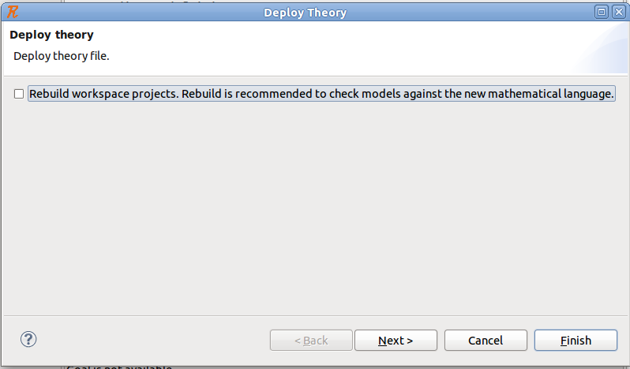
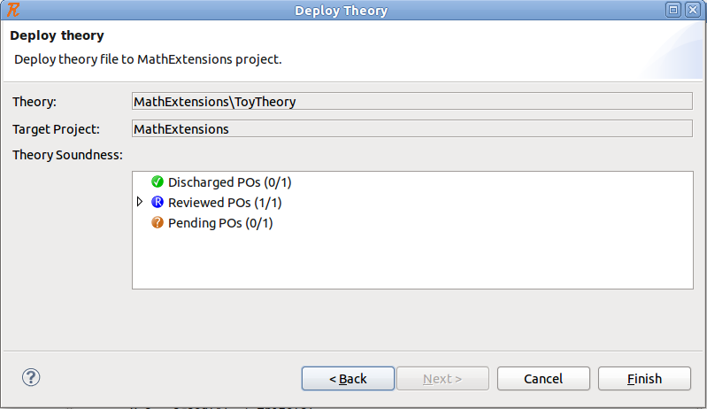
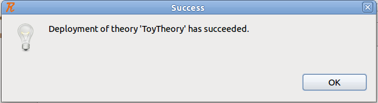

| Theory Plug-in User Manual |
| Theory Plug-in User Manual |
If the theory is deemed sound (i.e., all proof obligations are discharged), it can be deployed to be used by models (i.e., Event-B contexts and machines). A theory can be deployed as follows:
Select the theory you want to deploy.
right-click on the theory in the Event-B explorer, then click on Deploy.
the following wizard shows up:

if you check the button, the workspace will be rebuilt if the deployment is successful. A workspace rebuild is desirable to reflect any potential changes to the mathematical language.
you can finish, or proceed to the next page which looks like the following:

if the theory is successfully deployed, the following message is displayed:

Note that theories in the Event-B Explorer may have three different icons:
 signifies that theory is not deployed (does not have a deployed counterpart).
signifies that theory is not deployed (does not have a deployed counterpart).
signifies that theory is deployed (has a deployed counterpart).
signifies that theory has been deployed, but changes has been made to the theory since.
| Theory Plug-in User Manual |